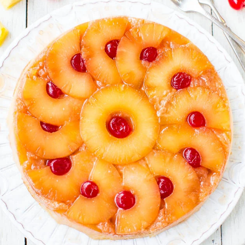

Pineapple Upside Down Cake
The cake we give my father every year on his birthday. The best cake known to man. If you say otherwise, you are simply wrong.
Ingredients:
Topping
20 oz canned pineapple slices in juice
12-18+ Maraschino cherries
4 tbsp unsalted butter
1/2 cup brown sugar
Cake
1 1/2 cups flour
1 tsp baking powder
1/4 tsp baking soda
1/4 tsp salt
1/3 cup milkc
1/4 cup pineapple juice
1/4 cup sour cream
1 tsp vanilla extract
3/4 cup white sugar
2 large eggs
Instructions
For Decorative Top
Preheat oven to 350.
Pour melted butter into a 9 inch cake pan, at least 2 inches deep. Brush butter up the sides.
Sprinkle brown sugar over the base, roughly spreading it out.
Place one pineapple ring in the center, then surround with either halved rings, or whole ones.
Decorate with cherries, either in the middle of the pineapple rings, or however else desired.
For Batter:
Whisk flour, baking powder, baking soda and salt in a bowl.
Whisk milk, sour cream, pineapple juice and vanilla in a second bowl.
Beat butter and sugar for 2 minutes on high until fluffy in third bowl.
Add one eggs at a time, beating for 20 seconds in between.
Add 1/3 of flour mixture, then mix in using a rubber spatula. add 1/2 milk mixture, mix in. Add half
of remaining flour mixture, add all the remaining milk mixture, then mix. Then mix in the last of the flour
mixture.
Bake for 30 minutes. Remove, then loosely cover with foil, then continue baking for another 15 minutes,
until a toothppick inserted to the center comes out clean.
Turning Out the Cake
Remove cake from oven, and leave inside pan for 20 minutes.
Run butter knife around inner edge of cake pan, put a plate over the cake, then flip. Tap base of pan and then slowly lift.
Let cool completely before serving.
Learn How to Make the Best Cake.
